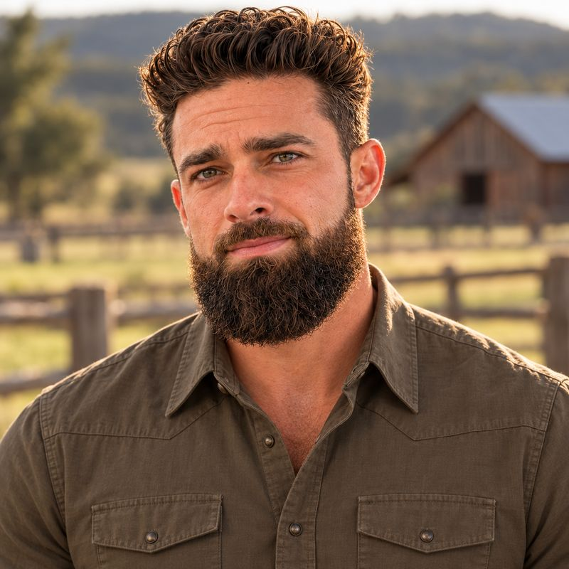

By late November the hardest recovery question is not where the deer bedded: it is how many times it was pushed before you got the call.
By Zach Peterson, Founder, Found From Above
November 24, 2026
A late November call sounds different from an October one. The shot was yesterday, or the day before. The trail was worked, then worked again by somebody's cousin with a lantern. Two other groups have hunted the property since, the wind has been wrong, and the deer, if it is still on the property at all, has been moved by pressure more than by its wound. The pilot's first job on a call like that is not flying. It is deciding whether flying helps, and that decision is triage.
Triage is not a delay tactic and it is not a sales screen. It is the same set of questions asked in the same order on every late season call, because the answers decide the search circle, the timing, and sometimes whether there should be a flight at all. A pilot who skips them is not being responsive. He is being expensive.
Before any of that flies, the state gets its step. In Missouri, that is conservation agent authorization before the flight. In Maryland, it is the Natural Resources Police calls before and after. In Louisiana, ground tracking comes first and the drone follows the trackers, not the other way around. Georgia runs on private property, legally hunted game, and landowner permission to take off or land. Each Allowed state in our database carries its own version of the step, and late season is no season to improvise it. Our earlier piece on timing makes the companion point: call before the trail goes cold, and do the state step while you wait, so a yes can fly the same night.
Late season pressure makes one temptation worse: using the flight to learn where the deer are now. A hunter who has watched a property empty out under gun season wants the camera to tell him where they went. That is scouting, and it is outside every recovery rule we work under. The flight looks for one animal, the one that was hit, and information about anything else the camera passes is not the product and does not get reported as a hunting tip. Our standards page sets out how the network holds that line, including what happens when a flight finds a live animal it cannot lawfully help with.
A good late season yes is easy to recognize. The call came the same day, or the trackers were disciplined enough to back out at last blood and wait. Pressure on the property has been light, or the pushed deer's likely cover is still inside the permission lines. The state step is done or underway, the last blood point is marked, and the flight goes up that night over ground nobody has walked since the shot. That search has a real chance, and it is the search the whole triage is built to protect.
Sometimes the triage ends in a no. Three days since the shot, two drives through the property, and permission missing on the parcel the deer most likely crossed into: a flight there burns a pilot's night and a hunter's money searching ground the deer has already left. Saying so is part of the service, and it costs the pilot a booking he could have taken. A network that will tell you when not to fly is the one worth calling when the answer is yes: early, with the trail still fresh, the pressure accounted for, and the paperwork already done.

About the author: Zach Peterson is the founder of Found From Above. He built the network's state by state legality database from written agency guidance, including Georgia DNR Law Enforcement's written position on drone deer recovery, and runs the platform's pilot verification and booking operations.
Tell us where the animal was last seen and we will match you with a verified thermal pilot near you.